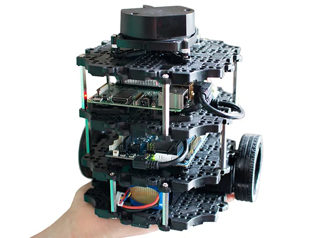
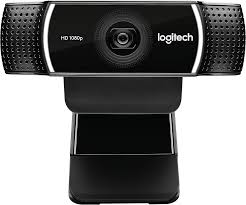
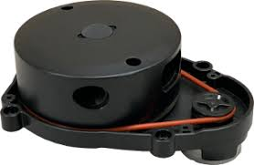
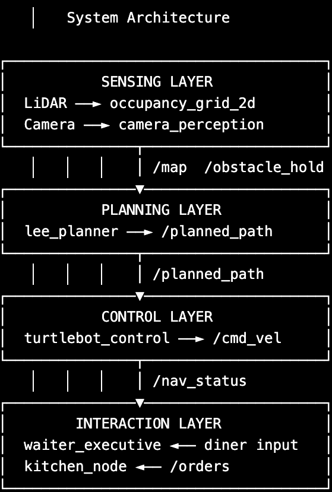
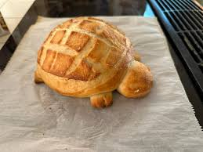
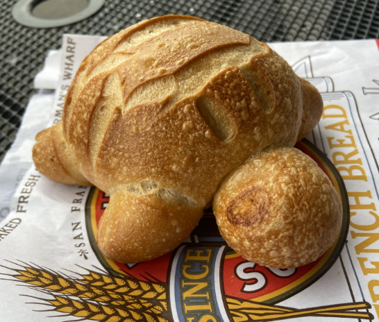
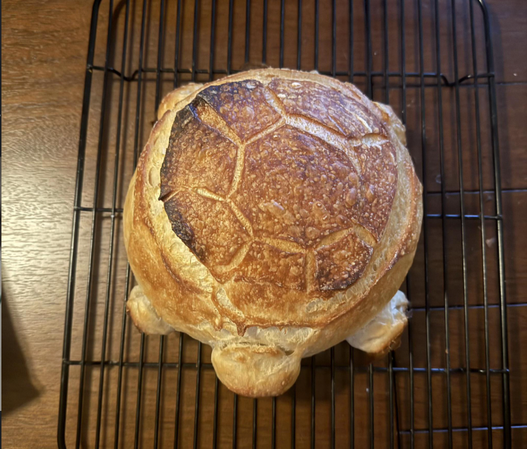
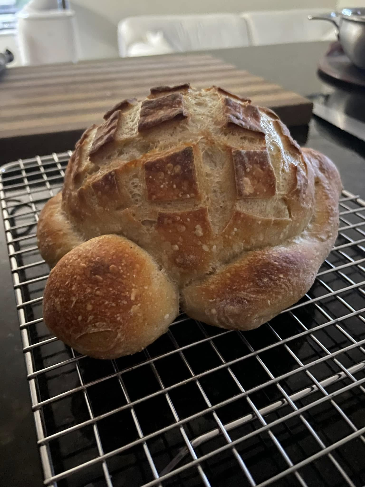
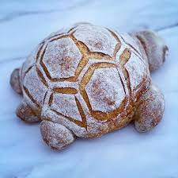
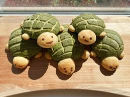

The Toasted Turtle
EECS 106A Project
University of California, Berkeley
GitHub Repository: github.com/MattCullen6154/106aFinal
Demo Presentation: Slide Deck
Introduction
Project Goal
The goal of this project is to build a fully autonomous robot using a TurtleBot3 platform that can navigate a simulated restaurant environment, handling food and drink orders via a command-line interfact, and completing multi-stop delivery tasks without human intervention while avoiding collisions with both static and dynamic obstacles.
This project integrates the core components of atuonomous robotics: perception, planning, mapping, and human-robot interaction. It combines them into a unified system for a real-world service robot behavior.
Real-World Applications
The techniques developed in this project are directly applicable to a range of real-world autonomous service robot deployments:
- Restaurant and hotel service robots delivering food, drinks, and amenities in dynamic human environments.
- Hospital logistics robots transporting medications, specimens, or supplies while safely navigating around staff and patients.
- Autonomous floor-cleaning robots operating in commercial spaces.
- Warehouse picking and delivering robots in partially structured environments alongside human workers.
Design
Design Criteria and Desired Functionality
The system must meet the following design criteria:
- Navigate autonomously from kitchen to table to water station and back without collisions.
- Accept orders from a diner and dispatch the correct route sequence.
The desired functionalities include:
- Detect and stop for dynamic obstacles in real time, then resume when clear.
- Replan around static obstacles added to the environment after the initial SLAM map was built.
System Design
The system is structured as four high-level software layers communicating over ROS 2 topics:
- Sensing: LiDAR and camera-based perception for environment understanding.
- Mapping and Planning: A pre-built SLAM map fused with dynamic LiDAR updates, planned over by a Lee BFS global planner.
- Control: Proportional controller for waypoint tracking with reactive obstacle stopping.
- Interaction: State machine for order handling and task coordination between robot modules.
Design Choices and Trade-Offs
- Lee BFS vs A*: BFS is simpler and correct for small grids. A* would be faster on larger maps but adds heuristic tuning. BFS was chosen for simplicity and reliability.
- Monocular depth estimation: Used mask pixel count and known object area for depth estimation. This avoids the need for a depth camera but is less accurate at long range or with occlusions.
- Dynamic vs static obstacle classification: Classifying obstacles by COCO class, such as person or bag as dynamic and chair or table as static, avoids the failure mode of waiting indefinitely for a chair to move. The cost is that misclassified obstacles get the wrong response, though YOLO's accuracy on these classes is high.
Impact of Design Choices
These choices provided a reliable starting point for autonomous navigation in a known indoor environment. However, the system still relies heavily on environments with mostly known obstacles and can struggle with rapidly changing scenes or ambiguous obstacle types.
Implementation
Hardware
- TurtleBot3: Locomotion platform with differential drive motors and wheel odometry.
- Logitech Webcam: Forward-facing camera for YOLO obstacle detection.
- TurtleBot3 LiDAR: 360-degree planar LiDAR for occupancy grid updates.
- 3D-printed rear tray: Custom rear-mounted serving platform.




Software Overview

1. Sensing Layer
The sensing layer is responsible for real-time perception of the environment using both LiDAR and vision.
-
LiDAR sensing is handled by
/scan, which is converted into a local occupancy grid,occupancy_grid_2d. This grid captures a static stored structure and newly introduced obstacles in the environment. -
Camera-based perception is handled by the
camera_perceptionnode, which runs a YOLOv8 segmentation model on/image_raw. It detects semantically meaningful obstacles, such as people, chairs, and backpacks, and estimates their 3D position using mask-based depth estimation and the camera intrinsics.
The perception system outputs:
/obstacle_point, a 3D obstacle location, transformed intobase_link/obstacle_hold, a binary safety signal for reactive stopping
2. Mapping and Planning Layer
The mapping system fuses a pre-built SLAM map with live LiDAR updates to have a continuously updated representation of the environment.
- A static occupancy map is loaded from
.pgmand.yamlfiles viamap_loader.py. - Dynamic obstacles are integrated using real-time updates from
/scan. - The resulting fused representation is published as a combined
/map.
The lee_planner node performs global path planning using Lee's BFS algorithm over a coarsened occupancy grid.
Key design steps include:
- Obstacle inflation to ensure safe clearance margins
- Grid downsampling, by a factor of 7, to improve planning efficiency
- Goal snapping to nearest free cell if occupied
- Line-of-sight path simplification to reduce unnecessary waypoints
The planner publishes:
/planning_grid/waypoint_markers/planned_path
3. Control Layer
The control layer converts planned paths into motor commands for the robot. A proportional controller, turtlebot_control, regulates:
- Heading alignment toward the next waypoint
- Forward velocity based on Euclidean distance to goal
This layer also integrates reactive safety behavior:
- Subscribes to
/obstacle_hold - Immediately halts motion when a dynamic obstacle is detected
- Resumes execution once the path is clear
4. Interaction Layer
The interaction layer manages high-level task execution and human-robot communication. The waiter_executive node implements a state machine that:
- Accepts diner orders via a command-line interface
- Converts orders into a sequence of navigation goals, such as kitchen, water station, and table
- Coordinates task execution across the robot stack
A companion kitchen_node sends the order to the chef.
Complete System Workflow
- The diner enters an order through the command-line interface.
- The waiter executive determines the required sequence of destinations.
- The mapping and planning stack generates a safe navigation path.
- The TurtleBot follows the generated waypoints using real-time motor control.
- LiDAR and camera perception continuously monitor for obstacles.
- If a dynamic obstacle is detected, the robot pauses and waits.
- If a static obstacle blocks the path, the planner replans a new route.
- The robot delivers the order and returns to the kitchen autonomously.
Results
Performance
The robot successfully collected food and water items and transported them between the kitchen, water station, and dining table stations.
- The robot successfully navigated simple indoor environments.
- LiDAR was used to generate a map of the room and define restaurant points of interest.
- The robot received orders from a human operator in the kitchen area.
- The robot detected and avoided obstacles during navigation.
- The system planned safe navigation paths and executed them using real-time motor control.
Overall, the robot successfully demonstrated obstacle detection, safe path planning, and autonomous transportation between restaurant stations.
One major limitation was that the system initially treated all obstacles identically, causing slow replanning behavior and delays in deciding whether to wait or reroute.
Demo Video
Please play the videos below at the same time. They are meant to be viewed synchronously, as the first video shows how the TurtleBot navigates through the simulated restaurant environment, and the second shows how the RViz map changes when dynamic obstacles appear, as well as the found path that the TurtleBot follows. The videos were taken at the same time in order to display a synchronous view of how the map changes as the TurtleBot moves. Since the videos show the full demo and may be long in length, feel free to speed them up by toggling the settings in the upper right corner.
Video Demo 1: linked here
Video Demo 2: linked here
Conclusion
Project Outcome
Our results were promising, but integration challenges prevented the system from achieving the level of fluidity and robustness we originally envisioned. We waited too long to integrate independently developed components, which introduced unexpected bugs and unstable behavior during final testing.
Despite these challenges, the robot successfully demonstrated autonomous navigation throughout the simulated restaurant environment.
Difficulties Encountered
-
NumPy Compatibility: NumPy 2.x incompatibility with the system OpenCV package required downgrading to
numpy<2.0before Ultralytics YOLO could import correctly. - Obstacle Handling: The robot initially took too long to reroute around obstacles and struggled to determine whether it should hold position or immediately replan.
- Depth Estimation Accuracy: degraded for partially occluded obstacles and at distances beyond approximately 3 meters.
Future Improvements
Future iterations of the project would improve obstacle classification and decision-making:
- Classify obstacles as dynamic, such as people, backpacks, and handbags, or static, such as chairs, tables, and laptops.
- Trigger immediate replanning for static obstacles.
- Use a timed hold-and-wait behavior for dynamic obstacles before replanning.
Meet the Toasted Turtle Team!

Ha Nguyen
Senior in Data Science with a concentration in Robotics.

Angela Lee
Senior majoring in Computer Science and Psychology.

Somil Jethra
Senior majoring in Electrical Engineering and Computer Sciences.

Matt Cullen
Senior majoring in Electrical Engineering and Computer Sciences.

Aarsh Shroff
Junior majoring in Computer Science.
Contributions
- Ha Nguyen: Camera perception node, YOLO integration, depth estimation, TurtleBot control node, obstacle hold integration.
- Angela Lee: Restaurant mapping, mapping waypoints, LiDAR path planning, and project website setup.
- Somil Jethra: User command terminal and state machine, kitchen node, waiter executive, UI for diner ordering and kitchen monitoring.
- Matt Cullen: Restaurant mapping package, including waypoints and path planning around obstacles. Designed tray.
- Aarsh Shroff: User command terminal and state machine, improved depth estimation methods in the perception node.
Thank You!

Thank you to Jaeyun Stella Seo for mentoring our project, and the EECS 106A staff for a wonderful semester!
This website design was inspired by Jon Barron and Seohong Park .